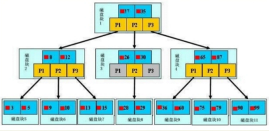
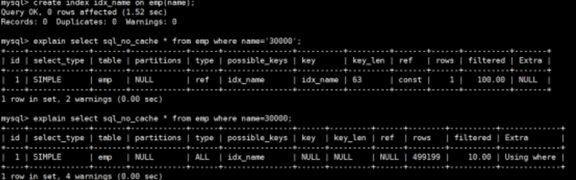
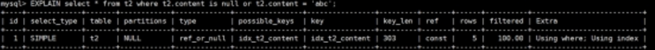
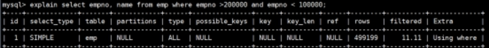

MySQL高级
MySQL是一种关系型数据库管理系统，关系数据库将数据保存在不同的表中，而不是将所有数据放在一个大仓库内，这样就增加了速度并提高了灵活性。MySQL所使用的 SQL 语言是用于访问数据库的最常用标准化语言。MySQL 软件采用了双授权政策，分为社区版和商业版，由于其体积小、速度快、总体拥有成本低，尤其是开放源码这一特点，一般中小型和大型网站的开发都选择 MySQL 作为网站数据库。MySQL5 支持事务、视图、存储过程、触发器等。
MySQL高级
索引
索引是什么
MySQL官方对索引的定义为：索引(Index)是帮助MySQL高效获取数据的数据结构。可以得到索引的本质：索引是数据结构。可以简单理解为排好序的快速查找数据结构。
在数据之外，数据库系统还维护着满足特定查找算法的数据结构，这些数据结构以某种方式引用(指向)数据，这样就可以在这些数据结构上实现高级查找算法。这种数据结构，就是索引。下图就是一种可能的索引方式示例：
左边是数据表，一共有两列七条记录，最左边的是数据记录的物理地址。为了加快Col2的查找，可以维护一个右边所示的二叉查找树，每个节点分别包含索引键值和一个指向对应数据记录物理地址的指针，这样就可以运用二叉查找在一定的复杂度内获取到相应数据，从而快速的检索出符合条件的记录。
一般来说索引本身也很大，不可能全部存储在内存中，因此索引往往以索引文件的形式存储的磁盘上。
索引的优劣势
优点：
提高数据检索的效率，降低数据库的IO成本；通过索引列对数据进行排序，降低数据排序的成本，降低了CPU的消耗。
劣势：
虽然索引大大提高了查询速度，同时却会降低更新表的速度，如对表进行INSERT、UPDATE和DELETE。因为更新表时，MySQL不仅要保存数据，还要保存一下索引文件每次更新添加了索引列的字段，都会调整因为更新所带来的键值变化后的索引信息。实际上索引也是一张表，该表保存了主键与索引字段，并指向实体表的记录，所以索引列也是要占用空间的。
MySQL的索引结构
B-tree索引

一颗b树，浅蓝色的块我们称之为一个磁盘块，可以看到每个磁盘块包含几个数据项（深蓝色所示）和指针（黄色所示），如磁盘块1包含数据项17和35，包含指针P1、P2、P3，P1表示小于17的磁盘块，P2表示在17和35之间的磁盘块，P3表示大于35的磁盘块。
如果要查找数据项29，那么首先会把磁盘块1由磁盘加载到内存，此时发生一次IO，在内存中用二分查找确定29在17和35之间，锁定磁盘块1的P2指针，内存时间因为非常短（相比磁盘的IO）可以忽略不计，通过磁盘块1的P2指针的磁盘地址把磁盘块3由磁盘加载到内存，发生第二次IO，29在26和30之间，锁定磁盘块3的P2指针，通过指针加载磁盘块8到内存，发生第三次IO，同时内存中做二分查找找到29，结束查询，总计三次IO。
B+tree索引
B+树的非叶子结点仅仅存储着关键字信息和叶子的指针，B+树中的数据都存储在叶子结点上，也就是其所有叶子结点的数据组合起来就是完整的数据.因此每个磁盘块包含的关键字信息会更多。这样也就决定了加载一个磁盘块可以获取到更多的关键字，可以减少IO操作，一次IO操作相当于成百上千次的内存比较.在B+树上增加了顺序访问指针，也就是每个叶子节点增加一个指向相邻叶子节点的指针，这样一棵树成了数据库系统实现索引的首选数据结构。
B-Tree与B+Tree 的区别
B-树的关键字和记录是放在一起的， B+树的非叶子节点中只有关键字和指向下一个节点的索引，记录只放在叶子节点中。
在B-树中，越靠近根节点的记录查找时间越快，只要找到关键字即可确定记录的存在；而B+树中每个记录的查找时间基本是一样的，都需要从根节点走到叶子节点，而且在叶子节点中还要再比较关键字。从这个角度看B-树的性能好像要比B+树好，而在实际应用中却是B+树的性能要好些。因为B+树的非叶子节点不存放实际的数据，这样每个节点可容纳的元素个数比B-树多，树高比B-树小，这样带来的好处是减少磁盘访问次数。尽管B+树找到一个记录所需的比较次数要比B-树多，但是一次磁盘访问的时间相当于成百上千次内存比较的时间，因此实际中B+树的性能可能还会好些，而且B+树的叶子节点使用指针连接在一起，方便顺序遍历（例如查看一个目录下的所有文件，一个表中的所有记录等），这也是很多数据库和文件系统使用B+树的缘故。
为什么说B+树比B-树更适合实际应用中操作系统的文件索引和数据库索引？
B+树的磁盘读写代价更低
B+树的内部结点并没有指向关键字具体信息的指针。因此其内部结点相对B 树更小。如果把所有同一内部结点的关键字存放在同一盘块中，那么盘块所能容纳的关键字数量也越多。一次性读入内存中的需要查找的关键字也就越多。相对来说IO读写次数也就降低了。
B+树的查询效率更加稳定
由于非终结点并不是最终指向文件内容的结点，而只是叶子结点中关键字的索引。所以任何关键字的查找必须走一条从根结点到叶子结点的路。所有关键字查询的路径长度相同，导致每一个数据的查询效率相当。
聚簇索引和非聚簇索引
聚簇索引并不是一种单独的索引类型，而是一种数据存储方式。术语‘聚簇’表示数据行和相邻的键值聚簇的存储在一起。如下图，左侧的索引就是聚簇索引，因为数据行在磁盘的排列和索引排序保持一致。
聚簇索引的好处
按照聚簇索引排列顺序，查询显示一定范围数据的时候，由于数据都是紧密相连，数据库不用从多个数据块中提取数据，所以节省了大量的io操作。
聚簇索引的限制
对于mysql数据库目前只有innodb数据引擎支持聚簇索引,而Myisam并不支持聚簇索引。
为了充分利用聚簇索引的聚簇的特性，所以innodb表的主键列尽量选用有序的顺序id，而不建议用无序的id，比如uuid这种。
MySQL索引分类
单值索引 INDEX
即一个索引只包含单个列，一个表可以有多个单列索引
1 | # 随表一起创建： |
唯一索引
索引列的值必须唯一，但允许有空值
1 | # 随表一起创建： |
主键索引
设定为主键后数据库会自动建立索引，innodb为聚簇索引
1 | # 随表一起建索引 |
复合索引
即一个索引包含多个列
1 | # 随表一起建索引： |
基本语法
1 | # 创建 |
索引的创建时机
适合创建索引的情况
主键自动建立唯一索引；
频繁作为查询条件的字段应该创建索引；
查询中与其它表关联的字段，外键关系建立索引；
单键/组合索引的选择问题， 组合索引性价比更高；
查询中排序的字段，排序字段若通过索引去访问将大大提高排序速度；
查询中统计或者分组字段；
查询中排序的字段，排序字段若通过索引去访问将大大提高排序速度。
不适合创建索引的情况
表记录太少；
经常增删改的表或者字段；
Where条件里用不到的字段不创建索引；
过滤性不好的不适合建索引；
常见索引失效
全值匹配我最爱
1 | # 建立索引 |
结论：全职匹配我最爱指的是，查询的字段按照顺序在索引中都可以匹配到！
更换条件顺序查看索引能否被应用
结论：SQL中查询字段的顺序，跟使用索引中字段的顺序没有关系。
最佳左前缀法则
使用复合索引，需要遵循最佳左前缀法则，即如果索引了多列，要遵守最左前缀法则。指的是查询从索引的最左前列开始并且不跳过索引中的列。
结论：过滤条件要使用索引必须按照索引建立时的顺序，依次满足，一旦跳过某个字段，索引后面的字段都无法被使用
索引列上做计算
不在索引列上做任何操作（计算、函数、(自动or手动)类型转换），会导致索引失效而转向全表扫描
1 | # 在查询列上使用了函数 |
结论：等号左边无计算！
1 | # 在查询列上做了转换 |

结论：等号右边无转换！
索引列上进行范围查询
在索引列上使用范围查询（存储引擎不能使用索引中范围条件右边的列）
1 | explain SELECT SQL_NO_CACHE * FROM emp WHERE emp.age=30 and deptid=5 AND emp.name = 'abcd'; |
建议：将可能做范围查询的字段的索引顺序放在最后
使用覆盖索引
查询列和索引列时，不要写select （尽量使用覆盖索引（只访问索引的查询（索引列和查询列一致）））， 减少select。
1 | explain SELECT SQL_NO_CACHE * FROM emp WHERE emp.age=30 and deptId=4 and name='XamgXt'; |
使用不等于(!= 或者<>)
使用不等于(!= 或者<>)时，有时会无法使用索引会导致全表扫描。
1 | mysql> explain select SQL_NO_CACHE * from emp where emp.age = 30 ; |
is not null 和 is null
查看索引字段是否允许为空
1 | desc emp; |
当字段允许为Null的条件下
1 | explain select * from emp where age is null |
结论：is not null用不到索引，is null可以用到索引。
like的前后模糊匹配
1 | create index idx_name_emp on emp (name); |
结论：前缀模糊查询会导致索引失效
使用or
OR查询会导致索引失效
1 | explain select * from emp where age = 30 or age = 40; |
使用union all或者union来替代
1 | explain select * from emp where age = 30 union all select * from emp where age = 40 ; |
练习
| Where语句 | 索引是否被使用 |
|---|---|
| where a = 3 | Y,使用到a |
| where a = 3 and b = 5 | Y,使用到a，b |
| where a = 3 and b = 5 and c = 4 | Y,使用到a,b,c |
| where b = 3 或者 where b = 3 and c = 4 或者 where c = 4 | N |
| where a = 3 and c = 5 | 使用到a， 但是c不可以，b中间断了 |
| where a = 3 and b > 4 and c = 5 | 使用到a和b， c不能用在范围之后，b断了 |
| where a is null and b is not null | is null 支持索引 但是is not null 不支持,所以 a 可以使用索引,但是 b不可以使用 |
| where a <> 3 | 不能使用索引 |
| where abs(a) =3 | 不能使用 索引 |
| where a = 3 and b like ‘kk%’ and c = 4 | Y,使用到a,b,c |
| where a = 3 and b like ‘%kk’ and c = 4 | Y,只用到a |
| where a = 3 and b like ‘%kk%’ and c = 4 | Y,只用到a |
| where a = 3 and b like ‘k%kk%’ and c = 4 | Y,使用到a,b,c |
口诀
全值匹配我最爱，最左前缀要遵守；
带头大哥不能死，中间兄弟不能断；
索引列上少计算，范围之后全失效；
LIKE百分写最右，覆盖索引不写*；
不等空值还有OR，索引影响要注意；
Explain字段分析
Explain 之id
id: select查询的序列号,包含一组数字，表示查询中执行select子句或操作表的顺序。
d相同：执行顺序由上至下
1 | EXPLAIN select * from t1,t2,t3 where t1.id = t2.id and t2.id = t3.id ; |
id不同：如果是子查询，id的序号会递增，id值越大优先级越高，越先被执行
1 | EXPLAIN select t1.id from t1 where t1.id in |
MySQL5.5结果
1 | EXPLAIN select t2.* from t2 ,(select * from t3 where t3.content = '') s3 where s3.id = t2.id ; |
MySQL5.5的结果
id如果相同，可以认为是一组，从上往下顺序执行；
在所有组中，id值越大，优先级越高，越先执行 。
id号每个号码，表示一趟独立的查询。一个sql 的查询趟数越少越好。
Explain 之select_type
select_type : 主要用于区别普通查询、联合查询、子查询等的复杂查询。(1) SIMPLE：代表单表查询，查询中不包含子查询或者UNION。
PRIMARY：查询中若包含任何复杂的子部分，最外层查询则被标记为Primary。
MySQL5.5结果
DERIVED：在FROM查询中的子查询，被标记为DERIVED，MySQL会递归执行这些子查询，把结果存放在临时表中。
SUBQUERY：在WHERE列表中包含了子查询。
1 | EXPLAIN select t2.id from t2 where t2.id = ( select t3.id from t3 where t3.id = 1); |
DEPENDENT SUBQUERY：在SELECT或WHERE列表中包含了子查询,子查询基于外层。
1 | EXPLAIN select t2.id from t2 where t2.id in (select t3.id from t3 where t3.content = 't3_522'); |
MySQL5.5的结果
注意：SUBQUERY和DEPENDENT SUBQUERY都是where后面的条件，subquery是单个值，dependent subquery是一组值。
UNCACHEABLE SUBQUREY：当使用了@@来引用系统变量的时候，不会使用缓存。
1 | EXPLAIN select t2.id ,t2.content from t2 |
1 | EXPLAIN select t2.id ,t2.content from |
UNION RESULT：从UNION表获取结果的SELECT。
1 | EXPLAIN select t2.id ,t2.content from t2 |
MySQL5.5结果
Explain 之type
type是查询的访问类型，是较为重要的一个指标结果值从最好到最坏依次是：
system > const > eq_ref > ref > fulltext > ref_or_null > index_merge > unique_subquery > index_subquery > range > index > ALL ，
一般来说，得保证查询至少达到range级别，最好能达到ref。
system：表只有一行记录（等于系统表），这是const类型的特列，平时不会出现，这个也可以忽略不计。
const：表示通过索引一次就找到了,const用于比较primary key或者unique索引。因为只匹配一行数据，所以很快。如将主键置于where列表中，MySQL就能将该查询转换为一个常量。
1 | EXPLAIN select * from t1 where t1.id = 1; |
eq_ref：类似ref，区别在于使用的是唯一索引，使用逐渐的关联查询，关联查询出的记录只有一条。常见于主键或唯一索引描述。
1 | EXPLAIN select * from t1 ,t2 where t1.id = t2.id ; |
ref：非唯一性索引扫描，返回匹配某个单独值的所有行.本质上也是一种索引访问，它返回所有匹配某个单独值的行，然而，它可能会找到多个符合条件的行，所以他应该属于查找和扫描的混合体。
1 | EXPLAIN select * from t1 ,t2 where t1.content = t2.content; |
1 | create index idx_t2_content on t2(content); |
range：只检索给定范围的行,使用一个索引来选择行。key 列显示使用了哪个索引一般就是在你的where语句中出现了between、<、>、in等的查询这种范围扫描索引扫描比全表扫描要好，因为它只需要开始于索引的某一点，而结束语另一点，不用扫描全部索引。
1 | EXPLAIN select * from t1 where t1.id >10 ; |
1 | EXPLAIN select * from t1 where t1.id between 1 and 3 ; |
1 | EXPLAIN select * from t1 where t1.id in (1,2); |
index：出现index是sql使用了索引但是没用通过索引进行过滤，一般是使用了覆盖索引或者是利用索引进行了排序分组。
1 | EXPLAIN select * from t1; |
all：Full Table Scan，将遍历全表以找匹配的行。
1 | EXPLAIN select * from t1 ,t2 where t1.content = t2.content ; |
index_merge：在查询过程中需要多个索引组合使用，通常出现在有 or 的关键字的sql中。
ref_or_null：对于某个字段既需要关联条件，也需要null值得情况下。查询优化器会选择用ref_or_null连接查询。
1 | EXPLAIN select * from t2 where t2.content is null or t2.content = 'abc'; |

index_subquery：利用索引来关联子查询，不再全表扫描。
1 | create index idx_t3_content on t3(content); |
MySQL5.5的结果:
unique_subquery：该联接类型类似于index_subquery。 子查询中的唯一索引。
1 | EXPLAIN select * from t2 where t2.id in (select t3.id from t3 ); |
MySQL5.5的结果
说明：一般来说，得保证查询至少达到range级别，最好能达到ref。
Explain 之possible_keys
显示可能应用在这张表中的索引，一个或多个。查询涉及到的字段上若存在索引，则该索引将被列出，但不一定被查询实际使用。
Explain 之 key
实际使用的索引。如果为NULL，则没有使用索引。
Explain 之 key_len
表示索引中使用的字节数，可通过该列计算查询中使用的索引的长度。 key_len字段能够帮你检查是否充分的利用上了索引。ken_len越长，说明索引使用的越充分。

如何计算：
先看索引上字段的类型+长度比如 int=4 ; varchar(20) =20 ; char(20) =20
如果是varchar或者char这种字符串字段，视字符集要乘不同的值，比如utf-8 要乘 3,GBK要乘2
varchar这种动态字符串要加2个字节
允许为空的字段要加1个字节
第一组：key_len=age的字节长度：name的字节长度=4+1 + ( 20*3+2)=5+62=67
第二组：key_len=age的字节长度：4+1=5
Explain 之 ref
显示索引的哪一列被使用了，如果可能的话，是一个常数。哪些列或常量被用于查找索引列上的值。
1 | create index idx_name_t_emp on t_emp(name); |
Explain 之 rows
rows列显示MySQL认为它执行查询时必须检查的行数。越少越好！
1 | create index idx_name_t_emp on t_emp(name); |
Explain 之 Extra
Using filesort：说明mysql会对数据使用一个外部的索引排序，而不是按照表内的索引顺序进行读取。MySQL中无法利用索引完成的排序操作称为“文件排序”。
注意: 测试表数据不能太小。
优化前：
1 | explain select id ,empno ,name from t_emp where deptid = 100 order by name limit 10 ; |
优化后：
1 | create index idx_name_emp_1 on emp(name); |
Using temporary：使用临时表保存中间结果,MySQL在对查询结果排序时使用临时表。常见于排序 order by 和分组查询 group by。
优化前：
1 | explain select name, count(*) from emp where deptid = 100 group by name limit 10 ; |
优化后：
1 | create index idx_name_emp_1 on emp(name); |
Using index：表示相应的select操作中使用了覆盖索引(Covering Index)，避免访问了表的数据行，效率不错！如果同时出现using where，表明索引被用来执行索引键值的查找;如果没有同时出现using where，表明索引只是用来读取数据而非利用索引执行查找。
1 | explain select id from emp where id >1000 order by id ; |
Using where：表明使用了where过滤。
Using join buffer：使用了连接缓存。
1 | explain select * from emp ,dept where emp.empno = dept.ceo ; |
impossible where：where子句的值总是false，不能用来获取任何元组。
1 | explain select empno, name from emp where empno >200000 and empno < 100000; |

MySQL5.5的结果
select tables optimized away：在没有GROUPBY子句的情况下，基于索引优化MIN/MAX操作或者对于MyISAM存储引擎优化COUNT(*)操作，不必等到执行阶段再进行计算，查询Explian生成的阶段即完成优化。
在innodb中：
1 | explain select max(id) from emp ; |
在Myisam中：
存储引擎
InnoDB存储引擎
InnoDB是MySQL的默认事务型引擎，它被设计用来处理大量的短期(short-lived)事务。除非有非常特别的原因需要使用其他的存储引擎，否则应该优先考虑InnoDB引擎。
MyISAM存储引擎
MyISAM提供了大量的特性，包括全文索引、压缩、空间函数(GIS)等，但MyISAM不支持事务和行级锁，有一个毫无疑问的缺陷就是崩溃后无法安全恢复。
Archive引擎
Archive档案存储引擎只支持INSERT和SELECT操作，在MySQL5.1之前不支持索引。
Archive表适合日志和数据采集类应用。
根据英文的测试结论来看，Archive表比MyISAM表要小大约75%，比支持事务处理的InnoDB表小大约83%。
** Blackhole引擎**
Blackhole引擎没有实现任何存储机制，它会丢弃所有插入的数据，不做任何保存。但服务器会记录Blackhole表的日志，所以可以用于复制数据到备库，或者简单地记录到日志。但这种应用方式会碰到很多问题，因此并不推荐。
CSV引擎
CSV引擎可以将普通的CSV文件作为MySQL的表来处理，但不支持索引。
CSV引擎可以作为一种数据交换的机制，非常有用。
CSV存储的数据直接可以在操作系统里，用文本编辑器，或者excel读取。
Memory引擎
如果需要快速地访问数据，并且这些数据不会被修改，重启以后丢失也没有关系，那么使用Memory表是非常有用。Memory表至少比MyISAM表要快一个数量级。
Federated引擎
Federated引擎是访问其他MySQL服务器的一个代理，尽管该引擎看起来提供了一种很好的跨服务器的灵活性，但也经常带来问题，因此默认是禁用的。
MyISAM和InnoDB引擎
| 对比项 | MyISAM | InnoDB |
|---|---|---|
| 外键 | 不支持 | 支持 |
| 事务 | 不支持 | 支持 |
| 行表锁 | 表锁，即使操作一条记录也会锁住整个表，不适合高并发的操作 | 行锁,操作时只锁某一行，不对其它行有影响， 适合高并发的操作 |
| 缓存 | 只缓存索引，不缓存真实数据 | 不仅缓存索引还要缓存真实数据，对内存要求较高，而且内存大小对性能有决定性的影响 |
| 关注点 | 读性能 | 并发写、事务、资源 |
| 默认安装 | Y | Y |
| 默认使用 | N | Y |
| 自带系统表使用 | Y | N |
MyISAM不支持外键，InnoDB支持外键；MyISAM使用是表锁，即操作一条记录也会锁住整个表，不适合高并发的操作，InnoDB使用的是行锁，操作时只锁某一行，不对其他行有影响，适合高并发的操作；MyISAM只缓存索引，不缓存真实数据，InnoDB不仅缓存索引还要缓存真实数据，对内存要求较高，而且内存大小对性能有决定性的影响，因此InnoDB写的处理比MyISAM的效率差一些，并且会占用更多的磁盘空间已保留数据和索引。InnoDB提供了具有提交、回滚、崩溃恢复能力的事务安全。